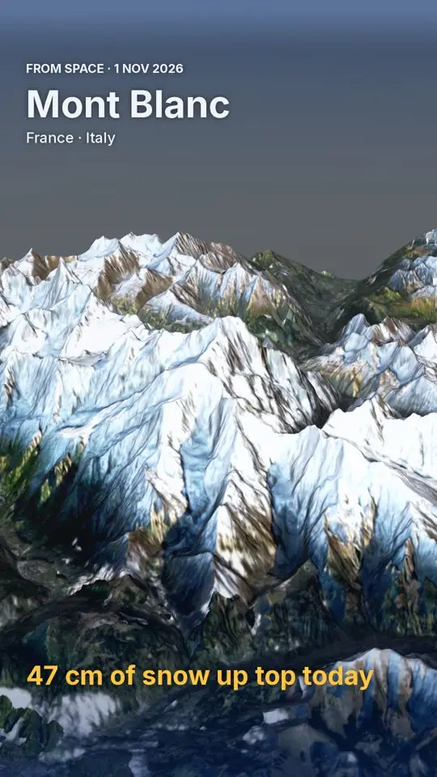

50 cm in La Grave: wo du jetzt in den Alpen Ski fährst (8. November)
50 cm in den oberen Hängen: Deshalb steht La Grave oben auf unserer Liste. Wir haben Schneehöhe, Neuschnee der letzten 72 Stunden und Prognose kombiniert und La Grave, Les Deux Alpes und Les Grands Montets ausgewählt. Von diesen Skigebieten hat Bonneval-sur-Arc heute den meisten Schnee in den oberen Hängen, etwa 52 cm; danach folgen La Grave 50 cm und Les Deux Alpes 47 cm.
Die Live-Schneeprognose für La Grave in der SnowScope-AppSchneehöhen, Pulverschnee-Alarme und 3D-Karte, gratis.
Skigebiete zur Wahl
La Grave bekam in den letzten 72 Stunden 12 cm Neuschnee. Die Höhe macht den Unterschied: In La Grave zeigt unser Modell 39 cm am Gipfel (3.543 m), 39 cm an der Mittelstation (3.369 m) und 32 cm im Tal (3.196 m). Satelliten sahen La Grave am 5. November, dem letzten klaren Tag, schneebedeckt.
Les Deux Alpes bekam in den letzten 72 Stunden 8 cm Neuschnee. Die Höhe macht den Unterschied: In Les Deux Alpes zeigt unser Modell 39 cm am Gipfel (3.511 m), 1 cm an der Mittelstation (2.397 m) und 0 cm im Tal (1.284 m). Satelliten sahen Les Deux Alpes am 3. November, dem letzten klaren Tag, schneebedeckt.
Les Grands Montets bekam in den letzten 72 Stunden 23 cm Neuschnee. Satelliten sahen Les Grands Montets am 5. November, dem letzten klaren Tag, schneebedeckt.
| Skigebiet | Schneehöhe | Neuschnee, 72 h | Erwartet, nächste Tage | Gipfel |
|---|---|---|---|---|
| La Grave | 50 cm | 12 cm | 32 cm | 3.543 m |
| Les Deux Alpes | 47 cm | 8 cm | 28 cm | 3.511 m |
| Les Grands Montets | 26 cm | 23 cm | 18 cm | 2.768 m |
| Bonneval-sur-Arc | 52 cm | 9 cm | 11 cm | 2.948 m |

Schneefallgrenze und Hänge
In La Grave liegt die Nullgradgrenze am 10. November zwischen 2.870 m und 3.210 m: Unten kann der Schnee nass werden, oben bleibt es winterlich.
Such den Schnee weit oben und an Nordhängen: Dort hält er am längsten, Südhänge verlieren ihn zuerst in der Sonne.

Prognose
Bis zum 11. November ergibt unsere Prognose 32 cm in La Grave, 28 cm in Les Deux Alpes und 18 cm in Les Grands Montets.
Prognosen für einige Tage können sich ändern: Schau am Tag vor der Abfahrt noch einmal auf die Karte.
Sicherheit zuerst
Die offizielle Lawinengefahrenstufe für das Gebiet um La Grave ist heute 1 auf der fünfstufigen Skala (Météo-France BERA).
Lies vor dem Freeriden oder einer Skitour den offiziellen Lawinenlagebericht (Links unten).
Tipps für Skifahrer
- Schnee auf der Karte heißt nicht, dass das Skigebiet offen ist: Prüfe Lifte und Öffnungstermine auf der Website des Skigebiets.
- Kleinere Skigebiete neben den Spitzenreitern haben oft denselben Schnee mit weniger Andrang: Vergleiche sie auf der Karte.
- Früher Schnee ist dünn. Bleib auf offenen, präparierten Pisten: Steine und Gras liegen oft knapp darunter.
- Such den Schnee weit oben und an Nordhängen: Dort hält er am längsten, Südhänge verlieren ihn zuerst in der Sonne.
- Stell in der SnowScope-App einen Pulverschnee-Alarm ein, damit du weißt, wann La Grave Neuschnee bekommt.
Zu diesen Zahlen
Die Schneehöhen der Skigebiete sind der meiste Schnee in den oberen Hängen laut SnowScope-Schneemodell (etwa 1 km, Lauf vom 8. November); es sind Schätzungen für eine Fläche, keine Messung an einem Punkt. Werte von Messstationen sind Messungen am angegebenen Tag. Prognosen können sich ändern. Lies vor dem Freeriden immer den offiziellen Lawinenlagebericht.
Offizielle Lawinenlageberichte: Météo-France BERA
Diesen Bericht zitieren
Für Forschung, Lehre oder Presse: Zahlen und Grafiken sind unter CC BY 4.0 mit dieser Quellenangabe frei nutzbar.
SnowScope (2026), 50 cm in La Grave: wo du jetzt in den Alpen Ski fährst (8. November), https://snowscope.app/blog/de/2026/11/alps-where-to-ski-best-snow-8-november-2026.html, abgerufen am 2026-11-08
SnowScope (Atlas Labs). (2026, November 8). 50 cm in La Grave: wo du jetzt in den Alpen Ski fährst (8. November). SnowScope snow reports. https://snowscope.app/blog/de/2026/11/alps-where-to-ski-best-snow-8-november-2026.html
BibTeX
@misc{snowscope2026alpswheretoskibestsnow8n,
author = {{SnowScope (Atlas Labs)}},
title = {50 cm in La Grave: wo du jetzt in den Alpen Ski fährst (8. November)},
year = {2026},
month = nov,
howpublished = {\url{https://snowscope.app/blog/de/2026/11/alps-where-to-ski-best-snow-8-november-2026.html}},
note = {Published 2026-11-08 21:27 UTC; accessed 2026-11-08}
}· CC BY 4.0 · Methoden, Daten und Werkzeuge →
La Grave: Schnee und Temperatur nach Höhe, dieser Winter vs letzter (Werkzeuge) →
La Grave folgen
Gratis: eine Nachricht, wenn Neuschnee kommt, und jeden Morgen die Vorhersage.
Weitere Schneeberichte

Liegt mehr Schnee als vor einem Jahr? Wir haben heute mit dem 8. November des letzten Winters in 4 Skigebieten in den Alpen verglichen: 0 davon haben …

Unser Schneemodell und unsere Prognose für heute in den Alpen deuten auf ein Schneesturm im Anmarsch und milde Luft, die einen Harschdeckel …

Bonneval-sur-Arc (Frankreich) hat heute den meisten Schnee in den Alpen, mit etwa 52 cm in den oberen Hängen. Es folgen La Grave mit 52 cm und Orelle …